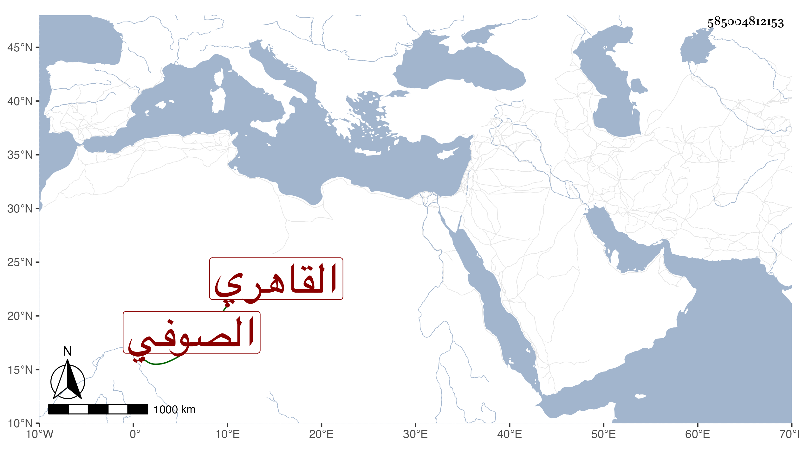

0902Sakhawi.DawLamic.ITO20230111-ara1.EIS1600.585004812153
Biography ID: 585004812153
726
محمد بن عمر الشمس القاهري الصوفي ويعرف بابن عمر . مات في منتصف ربيع الأول سنة ست وثمانين وتفرق الناس وظائفه التي زادت على الأربعين ما بين تصوف وقراءة وطلب وغير ذلك ومنها نصف خزن الكتب بالباسطية وصارت لابن أبي الطيب السيوطي بعد أن عرض عليه الرغبة عن وظائفه لترتفق بناته بثمنها فامتنع مع كونه لم يخلف لهم شيئا ، والله أعلم بمقصده فقد كان خيرا كثير التلاوة أقرأ في مكتب السابقية وقتا مع عقل وتؤدة وتودد رحمه الله .
